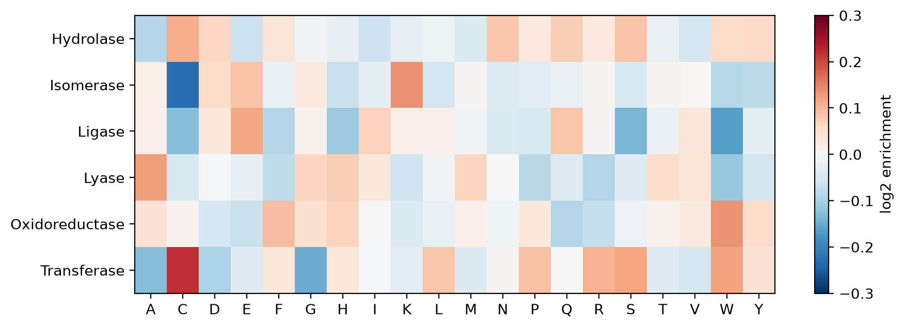

Look before you model
Each class’s mean composition against the overall mean, log₂ scale. All differences are within ±0.25, under 20%. Some have a story: Cys is enriched in transferases, many of which transfer ubiquitin with zinc-binding domains.